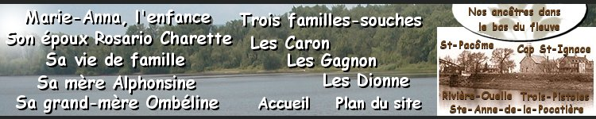

|
PLAN DU SITE DES CARON
|
|
| ACCUEIL | |
| MARIE-ANNA | |
| SA MÈRE ALPHONSINE | |
| SA GRAND-MÈRE OMBÉLINE | |
| TROIS
FAMILLES-SOUCHES DANS LE BAS DU FLEUVE
BAS DU FLEUVE |
|
|
|
|
 |
|
|
Marie-Anna,
son enfance Son
époux Rosario Sa vie de
famille Site créé le 27 août 2002, en 800 X
600. ©nicole.charette@zonecharette.ca |